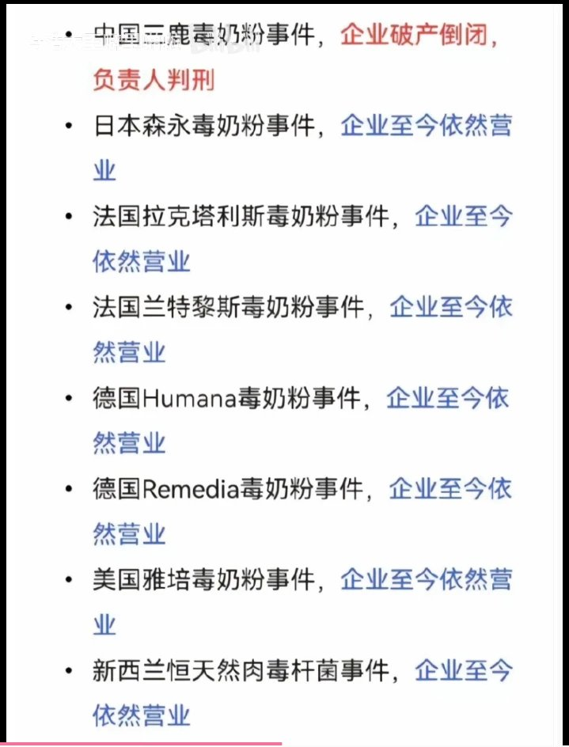

maybe🍥
@careforme123
卧槽拟吗，有些中国人真的为了洗人性都没有了
你但凡去真正了解一下，就知道三鹿事件是唯一一个主观故意的事件，唯一一个明知有毒还要继续掩盖继续卖的案件
你但凡去真正了解一下，除了三鹿受害者，其他企业哪个不是给的天价赔偿？够你打工几十辈子了
雅培案导致肠道坏死案例，每名婴儿一千多万美元
其次只有你三鹿的规模是最大的，波及三十万婴儿
你甚至他妈的不知道最后一个肉毒杆菌是闹出来的乌龙事件
还有，你再说别人的不好，也没法证明你的优秀，操你妈！我无法想象你这种魔鬼的人生！

宇航
@94iSxmywd4LwrN5
@careforme123 https://t.co/DsvnI8SQqw